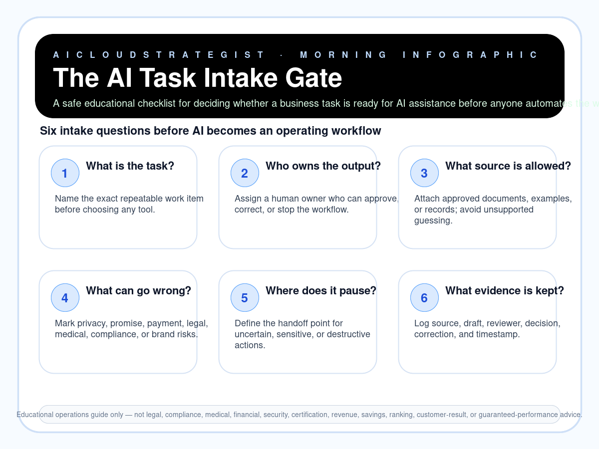

Morning publication · safe AI task intake
The AI Task Intake Gate
A safe educational checklist for deciding whether a business task is ready for AI assistance before anyone automates the wrong step.

Six intake questions
- 1. What is the task?: Name the exact repeatable work item before choosing any tool.
- 2. Who owns the output?: Assign a human owner who can approve, correct, or stop the workflow.
- 3. What source is allowed?: Attach approved documents, examples, or records; avoid unsupported guessing.
- 4. What can go wrong?: Mark privacy, promise, payment, legal, medical, compliance, or brand risks.
- 5. Where does it pause?: Define the handoff point for uncertain, sensitive, or destructive actions.
- 6. What evidence is kept?: Log source, draft, reviewer, decision, correction, and timestamp.
Truth boundary
Educational operations guide only — not legal, compliance, medical, financial, security, certification, revenue, savings, ranking, customer-result, or guaranteed-performance advice.
Want a safe AI workflow check?
If your team is about to automate customer follow-up, reporting, content, cloud operations, or compliance work, AICloudStrategist can review the task first and show where a human approval gate is needed.
Contact AICloudStrategist: request a free review at aicloudstrategist.com/contact or WhatsApp +91 87963 02608.